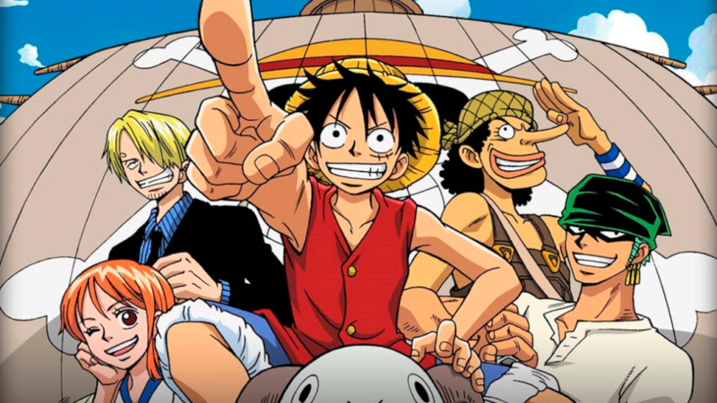
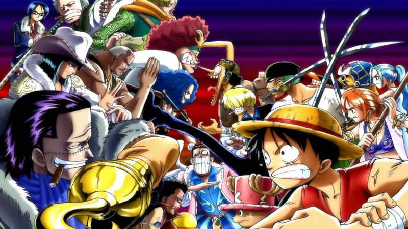
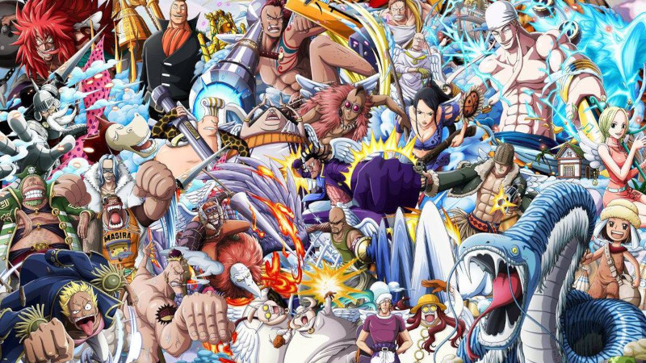
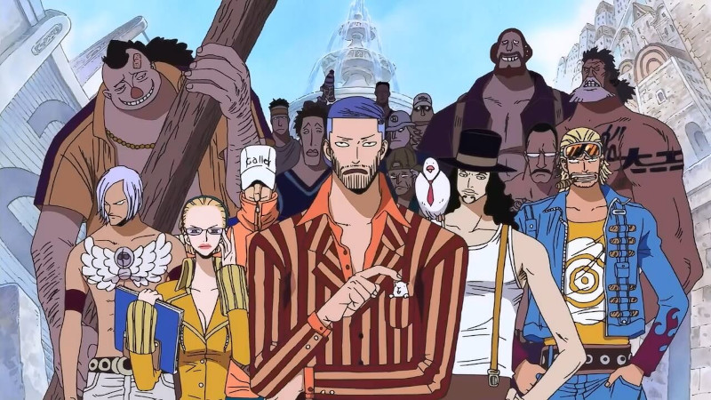
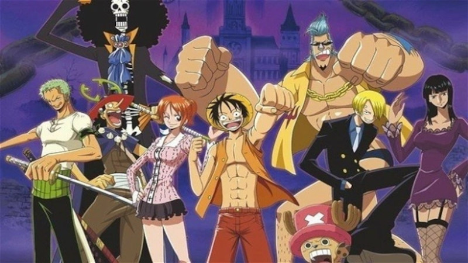
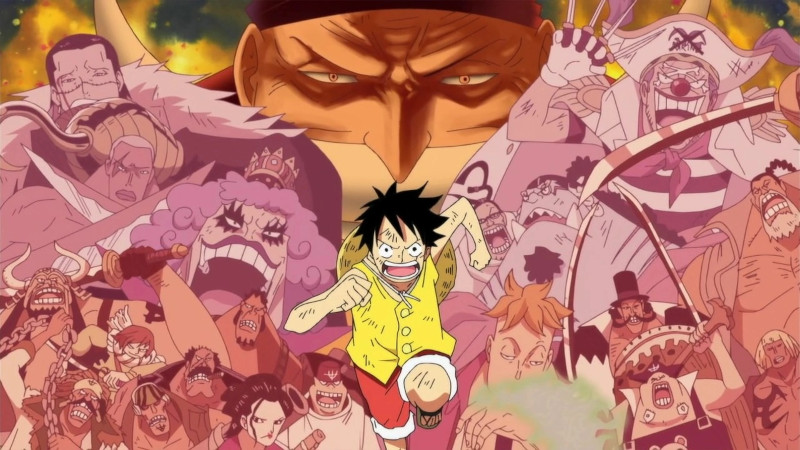
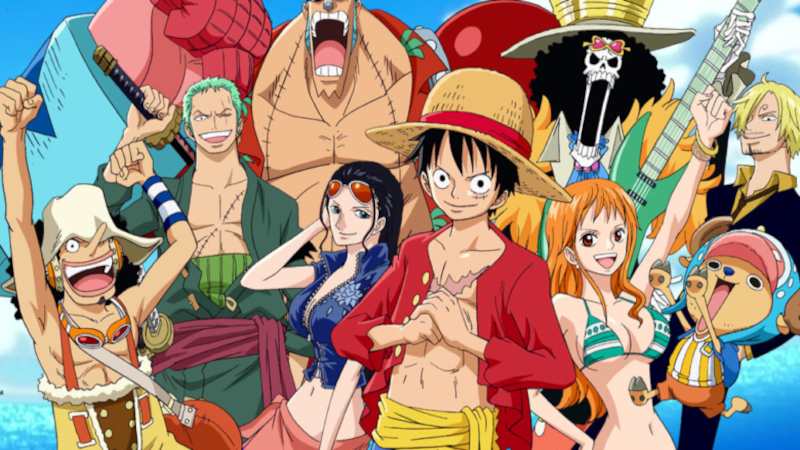
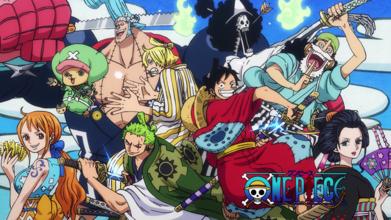

História
O mangá foi adaptado em um episódio OVA produzido pela Production I.G em 1998. O anime foi lançado em 20 de outubro de 1999, ele acompanha Luffy e os demais Chapéus de Palha há mais de 20 anos e conta com mais de 1000 epsódios atualmente, segundo o autor Eiichiro Oda, esta jornada ainda está longe de acabar, devendo perdurar por pelo menos mais cinco anos..
Epsódios e Sagas
- East Blue (001-061) 
- Alabasta (062-135) 
- Skypiea (136-206) 
- Water 7 (207-325) 
- Thriller Bark (326-384) 
- Guerra dos Maiorais (385-516) 
- Ilhas dos Homems Peixes (517-574) 
- Punk Hazard (575-629)
- Dressrosa (630-699)
- Dressrosa (700-746)
- Silver Mine (747-750)
- Zou (751-782)
- Ilha Whole Cake (783-878)
- Devaneio (879-891)
- País de Wano(892-1021) Atualmente 
Saga East Blue
Saga Alabasta
Saga Skypiea
Saga Water 7
Saga Thriller Bark
Saga Guerra de Marineford
Saga Ilha dos Homens-Peixe
Saga Aliança Pirata